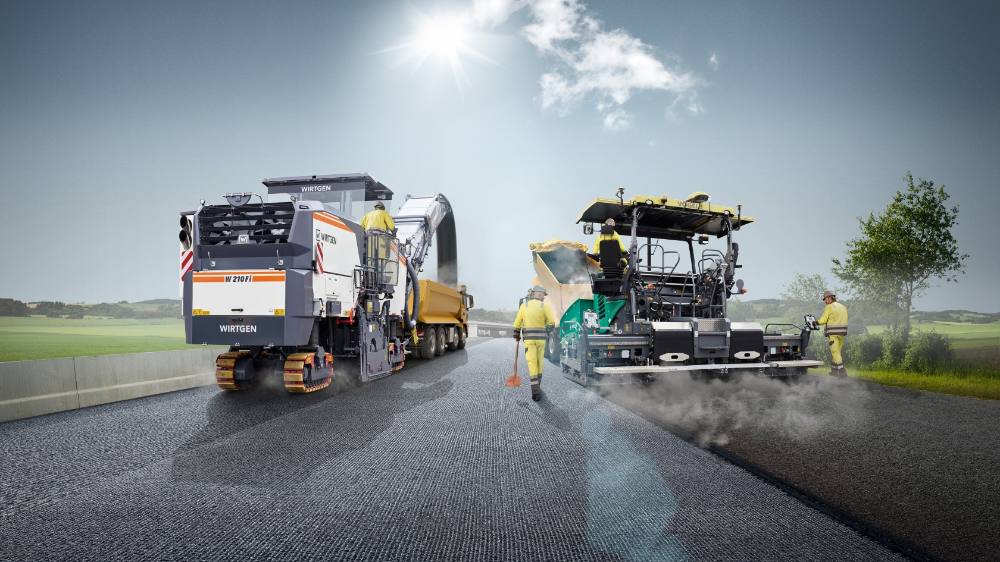

01
Civil & Land Development
Grading, drainage, stormwater, site access, utility coordination, permitting and civil plans.
Zic0n supports public infrastructure and private development projects with civil engineering, transportation, structural, geotechnical, pavement, and project-specific technical support.
We work with owners, consultants, architects, developers, and contractors when they need additional engineering support or a team that can take on a defined scope of work.
Grading, drainage, stormwater, site access, utility coordination, permitting and civil plans.
Roadway design, geometric improvements, ADA, roadside and safety improvements, rehabilitation, plans and estimates.
Structural analysis and design, foundations, retaining structures, building and site structures, rehabilitation and repair.
Geotechnical evaluation, foundation recommendations, earthwork, grading, pavement/subgrade evaluation and construction support.
Pavement evaluation and rehabilitation, asphalt materials, RAP, sustainable materials and technical analysis.
Design production, calculations, plan preparation, documentation, agency coordination and peak-workload support.
Zic0n stays lean and flexible. We start with what the project actually needs, then bring in qualified engineering professionals and specialty subconsultants when additional disciplines are required.

Tell us what you need. We can quickly discuss fit, team, and next steps.